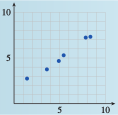

Subsection 7.2 Scatterplots
Empirical data points in a linear relation may not lie exactly on a line. There are many factors that can affect experimental data, including measurement error, the influence of environmental conditions, and the presence of related variable quantities.
Example 7.2.3.
A consumer group wants to test the gas mileage of a new model SUV. They test-drive six vehicles under similar conditions and record the distance each drove on various amounts of gasoline.
| Gasoline used (gal) | \(9.6\) | \(11.3\) | \(8.8\) | \(5.2\) | \(10.3\) | \(6.7\) |
| Miles driven | \(155.8\) | \(183.6\) | \(139.6\) | \(80.4\) | \(167.1\) | \(99.7\) |
Are the data linear?
Draw a line that fits the data.
What does the slope of the line tell us about the data?
-
No, the data are not strictly linear. If we compute the slopes between successive data points, the values are not constant. We can see from an accurate plot of the data, shown below, that the points lie close to, but not precisely on, a straight line.


- We would like to draw a line that comes as close as possible to all the data points, even though it may not pass precisely through any of them. In particular, we try to adjust the line so that we have the same number of data points above the line and below the line. One possible solution is shown above.
- To compute the slope of the our estimated line, we first choose two points on the line. Our line appears to pass through one of the data points,\((8.8, 139.6)\text{.}\) We look for a second point on the line whose coordinates are easy to read, perhaps \((6.5,100)\text{.}\) The slope is\begin{equation*} m = \frac{139.6 - 100}{8.8 - 6.5}= 17.2\text{ miles per gallon} \end{equation*}According to our data, the SUV gets about 17.2 miles to the gallon.
Warning 7.2.4.
To find the slope of your estimated line, be sure to choose points on the line; do not choose any of the data points (unless they happen to lie on your line).
Checkpoint 7.2.5.
Plot the data points. Do the points lie on a line?
Draw a line that fits the data.
| \(x\) | \(1.49\) | \(3.68\) | \(4.95\) | \(5.49\) | \(7.88\) | \(8.41\) |
| \(y\) | \(2.69\) | \(3.7\) | \(4.6\) | \(5.2\) | \(7.2\) | \(7.3\) |
- 

The graph in Example 7.2.3 is called a scatterplot. The points on a scatterplot may or may not show some sort of pattern. Consider the three plots shown below.
- In figure (a), the data points resemble a cloud of gnats; there is no apparent pattern to their locations.
- In figure (b), the data follow a generally decreasing trend, but certainly do not all lie on the same line.
- The points in figure (c) are even more organized; they seem to lie very close to an imaginary line.

If the data in a scatterplot are roughly linear, we can estimate the location of an imaginary line of best fit that passes as close as possible to the data points. We can then use this line to make predictions about the data.